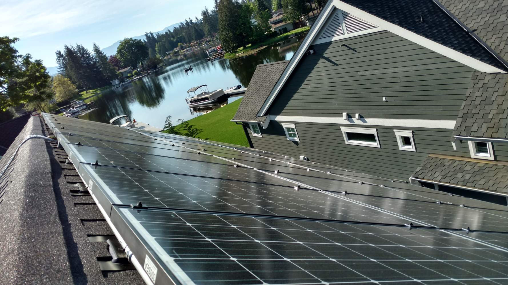
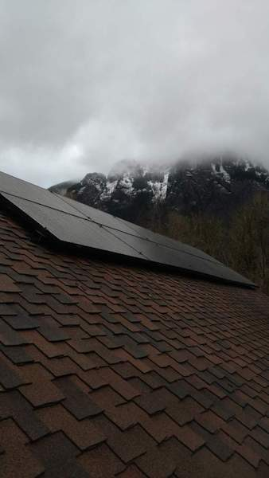
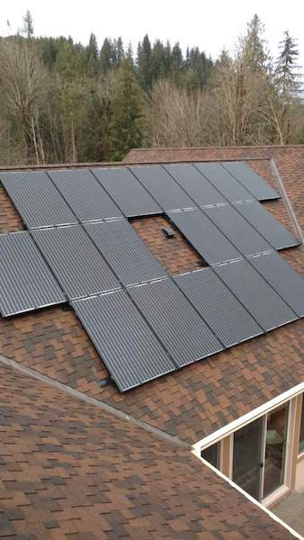

We installed 33 Itek 300 watt panels, which is a 9.9KW system. This is a steeply pitched roof facing Southwest with Blue Frog microinverters. In July 2017 alone, it produced 1739 KWH. By way of comparison, the average home uses only 900 KWH per month.
Black Diamond solar installation

We installed 34 Canadian Solar panels with AP Systems YC-500i microinverters. It is a 9.9 KW system facing south with a seasonal tree that interferes somewhat late in the year. It produced 1805 KWH in July 2017 alone and produced over 10,000 KWH over the entire year.
Highland Park, Seattle solar installation
We installed 38 Itek 305 watt panels on this home facing East, South, and West. It produced 49 KWH on a single clear day in February alone. Consider the average home uses 30 KWH per day. We also installed a critical loads panel and an LG Chem Resu Lithium Ion battery for backup. This is similar to the Tesla Powerwall and stores 10KWH of electricity.
We installed 38 Itek 305 watt panels on this home facing East, South, and West. It produced 49 KWH on a single clear day in February alone. Consider the average home uses 30 KWH per day. We also installed a critical loads panel and an LG Chem Resu Lithium Ion battery for backup. This is similar to the Tesla Powerwall and stores 10KWH of electricity.

We installed 38 Itek 305 watt panels on this home facing East, South, and West. It produced 49 KWH on a single clear day in February alone. Consider the average home uses 30 KWH per day. We also installed a critical loads panel and an LG Chem Resu Lithium Ion battery for backup. This is similar to the Tesla Powerwall and stores 10KWH of electricity.

We installed 38 Itek 305 watt panels on this home facing East, South, and West. It produced 49 KWH on a single clear day in February alone. Consider the average home uses 30 KWH per day. We also installed a critical loads panel and an LG Chem Resu Lithium Ion battery for backup. This is similar to the Tesla Powerwall and stores 10KWH of electricity.
Kent solar installation

The installation used 22 Itek solar panels on a south facing roof. There is virtually no shade on the roof, so we used a standard Solectria line inverter. The conduit run was long and high coming around a corner, under the eaves, and down the side of the house. Lots of ladder work.


Newcastle solar installation


These were 28 “all black” solar panels on a roof at the base of Mt Si. One section faces southeast and the other southwest.

Snoqualmie solar installation
Enumclaw ground mount solar tracker installation

This homeowner wanted a roof over a patio. I thought I could talk them into a roof where the solar panels actually were the roof. But, they weren’t into solar and just wanted a traditional roof. So, we shrugged and said, “OK.” We ripped out the old sunken patio, poured a new one, added a compass stamp, framed up the structure, put in skylights, wired lights, fans, and outlets, sheathed and shingled the roof, added facia, wrapped everything in cedar, and put in some bronze designer brackets for aesthetics.


Burien patio & roof cover

We put 33 “all black” solar panels on this roof. It is an 8.9 KW system. It has a shallow pitch and produces rather well despite facing east. It produced 1500 KWH in July 2017.
Lakeridge, Seattle solar installation
This is a 9.6 KW system with 32 solar panels facing southwest. There is a greenbelt with a lot of trees behind the house and some significant shade, so I wasn’t sure I wanted to do this one. We used some high quality low-cost panels made out-of-state to make the numbers pencil out. In July 2017, it produced 1605 KWH. With 2 months left, it is on pace to generate 8000 KWH. That’s some serious production.
Bothell solar installation

This was a 9.9 KW installation. A tree had fallen on their barn with a metal roof in a wind storm. So, we repaired the broken framing members and replaced half the roof with standing seam metal. This allowed us to attach solar to the metal ribs without making any penetrations in the roof. We don’t do gutters, by the way.

Fall City solar barn & metal roof installation
This was a 9.4 KW installation using a 10 KW Solar Edge inverter and 33 Solar World panels. It did 1500 KWH in July 2017. This roof is a solid performer. The customer later purchased an electric vehicle and had us install a car charger.
Renton solar installation

This was a straight re-roof. We tore off the old shingles, replaced some sheathing, and installed new architectural shingles.
Tacoma reroof

The home needed a new roof. So, we tore off 2 layers of composition shingles only to find a layer of shake shingles under that. We ripped that off too, hauled it all to the dump, sheathed the whole roof with plywood, fixed the leaky chimney flashing, and installed solar. We were able to fit 6 panels on a detached garage. So, we dug a trench and ran underground conduit to the main house where we fit a bunch more panels facing south and 4 facing east. The system gets good sun and, though only having 21 panels, still produced 6222 KWH in 2017 for the year.
Ballard solar installation & roof


Green Lake (by zoo), Seattle solar installation


Mount Si solar installation

26 modules facing southeast. 300 Watt solar panels manufactured by Canadian Solar with Iron Ridge black racking and black frames. The backsheet is white to reduce heat buildup. The second shot shows the section of 14 solar modules installed facing southwest.

26 modules facing southeast. 300 Watt solar panels manufactured by Canadian Solar with Iron Ridge black racking and black frames. The backsheet is white to reduce heat buildup. The second shot shows the section of 14 solar modules installed facing southwest.